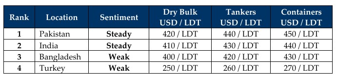

inWeekly Demolition Reports22/09/2025

After what seemed like months of unstoppable volatility, a modicum of stability seemed to enter the global trading marketsthis week as oil climbed marginally (0.17%) before the week ended, yet this remains a near 1.4% drop just this month and a 10.8% overall decline from the same time last year. On the flip side, trading markets continue to edge on as they surged another 3.6% this week, but the Baltic Exchange Dry Index reported both Panamax and Supramax indices dipping nearly 2% and 3% respectively, while the Cape index, which has been carrying the bulk of the dry index sector, climbed nearly 1% this week.
With minimal news emanating from the White House over the last couple of weeks and an ongoing status quo on state of warring nations, the mild serenity of the international markets found itself trickling down to the Indian sub-continent ship recycling locations as well this week, after what has been months of negative spirals that most destinations have endured over these summer / monsoon / recent months. Not only did local steel plate prices continue to flatline (remain optimistically steady?) across most locations, but even the U.S. Dollar seemed to weaken against key currencies this week, except for Turkey’s perennial landslide where its Lira is concerned. Supply too seems to have firmed a touch at the bidding tables of late, as recycling destinations continue to demonstrate the inflow of tonnage, while others languish in the obscurity on the availability of the types of units to bid on – and their subsequently willingness to engage on said units.
A majority of the slim collection of recent market sales remained focused on India, with Pakistan and (especially) Bangladesh still struggling to summon any coherent offerings or a clear buying at present, even for those vessels that are literally positioned in their backyard or sailing in from Far East locations. India meanwhile has cornered virtually all of the year’s LNG recycling sales, which have remained sporadically, yet mercifully steady over the last quarters (and indeed for much of the year), as other categories have clearly remained tied up in their respective trading lanes – given the performance of various indices over all of 2025.
As such, the average age of operating vessels has gradually increased with the draw of the Dollar from re-employment, with bulkers, containers and certain categories of tankers now often passing 30 years of age again. And while local market fundamentals do remain volatile, regulatory (HKC implementation) struggles continue to challenge a Pakistan market that desperately needs to catch up with yard infrastructure work. Turkey at the far end remains stranded in recycling oblivion out of necessity, then choice.
For Week 38 of 2025, GMS Market Rankings / vessel indications are as below.

📄 Download PDF: Ship-recycling-market-insight-Week-38-09-19-2025-September_Serene.pdfSource: GMS,Inc.https://www.gmsinc.net/gms_new/index.php/web